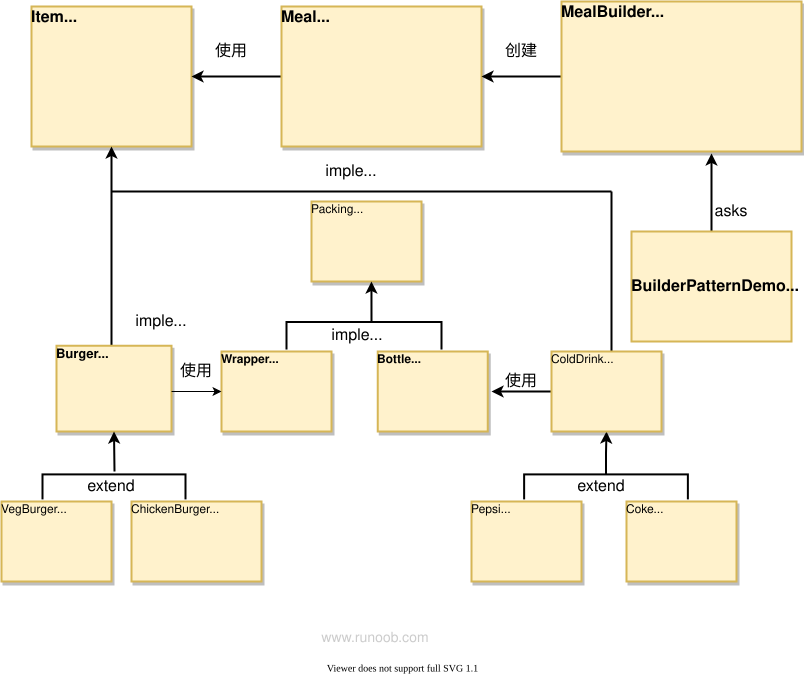

Patrón Builder
El patrón Builder es un patrón de diseño creacional que te permite separar los pasos de creación de un objeto complejo de su representación.
El patrón Builder es un patrón de diseño creacional cuyo objetivo principal es separar el proceso de construcción de un objeto complejo de su representación, lo que permite crear objetos con diferentes formas de representación.
Resumen
Intención
Separar un proceso de construcción complejo de su representación, de modo que el mismo proceso de construcción pueda crear diferentes representaciones.
Problema principal
En los sistemas de software, la creación de un objeto complejo suele constar de múltiples partes; la combinación de estas partes cambia a menudo, pero el algoritmo de combinación es relativamente estable.
Cuándo usarlo
Cuando algunos componentes básicos no cambian, pero su combinación cambia con frecuencia.
Cómo resolverlo
Separar las partes variables de las invariables.
Código clave
- Constructor: crea y proporciona instancias.
- Director: gestiona las dependencias de las instancias construidas y controla el proceso de construcción.
Ejemplos de aplicación
- Ir a KFC: la hamburguesa, la Coca-Cola, las papas fritas, las alitas de pollo frito, etc. no cambian, pero su combinación cambia con frecuencia, generando diferentes “combos”.
- En Java
StringBuilder。
Ventajas
- Separa el proceso de construcción de la representación, lo que hace que el proceso de construcción sea más flexible y pueda construir diferentes representaciones.
- Permite un mejor control del proceso de construcción y oculta los detalles concretos de construcción.
- Alta reutilización del código: se puede reutilizar el mismo constructor en diferentes procesos de construcción.
Desventajas
- Si el producto tiene pocas propiedades, el patrón Builder puede provocar redundancia de código.
- Aumenta el número de clases y objetos del sistema.
Escenarios de uso
- Cuando el objeto que se debe generar tiene una estructura interna compleja.
- Cuando los atributos internos del objeto que se debe generar son interdependientes.
Notas
La diferencia con el patrón de fábrica es que el patrón Builder se centra más en el orden de ensamblaje de las piezas.
Estructura
El patrón Builder incluye los siguientes roles principales:
Producto (Product): el objeto complejo que se va a construir. La clase de producto normalmente contiene múltiples partes o atributos.
Constructor abstracto (Builder): define la interfaz abstracta para construir el producto, incluyendo los métodos para construir cada una de sus partes.
Constructor concreto (Concrete Builder): implementa la interfaz del constructor abstracto, determina concretamente cómo construir cada parte del producto y se encarga de devolver el producto finalmente construido.
Director (Director): se encarga de llamar a los métodos del constructor para construir el producto; el director no conoce el proceso de construcción específico, solo le importa el orden y la forma de construcción del producto.
Implementación
Supongamos un caso de negocio de una tienda de comida rápida, donde un combo típico puede ser una hamburguesa (Burger) y una bebida fría (Cold drink). La hamburguesa puede ser vegetariana (Veg Burger) o de pollo (Chicken Burger), y se envuelven en una caja de cartón. La bebida fría puede ser Coca-Cola (coke) o Pepsi (pepsi), y se sirven en botella.
Vamos a crear unaIteminterfaz e implementaciónItemde las clases de entidad de la interfaz, y una que represente el empaque de alimentosPackinginterfaz e implementaciónPackingde las clases de entidad de la interfaz. La hamburguesa se envuelve en una caja de cartón y la bebida fría se sirve en botella.
Luego creamos unaMealclase, conItem 的 ArrayListy una mediante la combinación deItempara crear diferentes tipos deMealobjetosMealBuilder。BuilderPatternDemola clase usaMealBuilderpara crear unMeal。

Paso 1
Cree una interfaz que represente los artículos de comida y el empaque de alimentos.
Item.java
Packing.java
Paso 2
Cree clases de entidad que implementen la interfaz Packing.
Wrapper.java
Bottle.java
Paso 3
Cree una clase abstracta que implemente la interfaz Item; esta clase proporciona funcionalidad predeterminada.
Burger.java
ColdDrink.java
Paso 4
Cree clases de entidad que extiendan Burger y ColdDrink.
VegBurger.java
ChickenBurger.java
Coke.java
Pepsi.java
Paso 5
Cree una clase Meal con los objetos Item definidos anteriormente.
Meal.java
Paso 6
Cree una clase MealBuilder; la clase builder real es la responsable de crear objetos Meal.
MealBuilder.java
Paso 7
BuiderPatternDemo usa MealBuilder para demostrar el patrón Builder.
BuilderPatternDemo.java
Paso 8
Ejecute el programa y observe el resultado:
Veg Meal Item : Veg Burger, Packing : Wrapper, Price : 25.0 Item : Coke, Packing : Bottle, Price : 30.0 Total Cost: 55.0 Non-Veg Meal Item : Chicken Burger, Packing : Wrapper, Price : 50.5 Item : Pepsi, Packing : Bottle, Price : 35.0 Total Cost: 85.5
Mou Chunping
muc***ping@gmail.com
Ejemplo del patrón Builder: al hacer un pedido en KFC, podemos considerar que hacer el pedido es parte del proceso de construcción de una orden. El orden en que pedimos no importa, ni lo que pedimos; se puede pedir por separado, se puede pedir un combo, o un combo más artículos individuales, pero al final siempre hay que confirmar para completar el pedido.
public class OrderBuilder{ private Burger mBurger; private Suit mSuit; //单点汉堡,num为数量 public OrderBuilder burger(Burger burger， int num){ mBurger = burger; } //点套餐，实际中套餐也可以点多份 public OrderBuilder suit(Suit suit, int num){ mSuit = suit; } //完成订单 public Order build(){ Order order = new Order(); order.setBurger(mBurger); order.setSuit(mSuit); return order; } }Además, es adecuado para el fallo rápido; al llamar a build se puede hacer una validación y, si no se cumplen las condiciones necesarias, se puede lanzar una excepción de creación directamente. Así se usa en Request.Builder de OkHttp3.
public Request build() { if (url == null) throw new IllegalStateException("url == null"); return new Request(this); }Por ejemplo, si el pedido requiere un precio de al menos 30 yuanes:
//完成订单 public Order build(){ Order order = new Order(); order.setBurger(mBurger); order.setSuit(mSuit); if(order.getPrice() < 30){ throw new BuildException("订单金额未达到30元"); } return order; }Además, al construir, si hay parámetros obligatorios y opcionales, se puede añadir un constructor a la clase Builder para garantizar que no se omitan los parámetros obligatorios. Por ejemplo, al construir una petición http, la URL es obligatoria:
public class RequestBuilder{ private final String mUrl; private Map<String, String> mHeaders = new HashMap<String, String>(); private RequestBuilder(String url){ mUrl = url; } public static RequestBuilder newBuilder(String url){ return new RequestBuilder(url); } public RequestBuilder addHeader(String key, String value){ mHeaders.put(key, value); } public Request build(){ Request request = new Request(); request.setUrl(mUrl); request.setHeaders(mHeaders); return request; } }Mou Chunping
muc***ping@gmail.com
jade
guo***u_study@163.com
El patrón Builder, también llamado patrón Generador: separa una construcción compleja de su representación, de modo que el mismo proceso de construcción puede crear diferentes representaciones.
Tres roles:Constructor、Constructor concreto、Supervisor、Usuario (estrictamente hablando, no cuenta)
Rol del constructor:
public abstract class Builder { public abstract void buildPart1(); public abstract void buildPart2(); public abstract void buildPart3(); }Rol del supervisor:
public class Director { // 将一个复杂的构建过程与其表示相分离 private Builder builder; // 针对接口编程，而不是针对实现编程 public Director(Builder builder) { this.builder = builder; } public void setBuilder(Builder builder) { this.builder = builder; } public void construct() { // 控制（定义）一个复杂的构建过程 builder.buildPart1(); for (int i = 0; i < 5; i++) { // 提示：如果想在运行过程中替换构建算法，可以考虑结合策略模式。 builder.buildPart2(); } builder.buildPart3(); } }Rol del constructor concreto:
/** * 此处实现了建造纯文本文档的具体建造者。 * 可以考虑再实现一个建造HTML文档、XML文档，或者其它什么文档的具体建造者。 * 这样，就可以使得同样的构建过程可以创建不同的表示 */ public class ConcreteBuilder1 extends Builder { private StringBuffer buffer = new StringBuffer();//假设 buffer.toString() 就是最终生成的产品 @Override public void buildPart1() {//实现构建最终实例需要的所有方法 buffer.append("Builder1 : Part1\n"); } @Override public void buildPart2() { buffer.append("Builder1 : Part2\n"); } @Override public void buildPart3() { buffer.append("Builder1 : Part3\n"); } public String getResult() {//定义获取最终生成实例的方法 return buffer.toString(); } }Rol del cliente:
public class Client { public void testBuilderPattern() { ConcreteBuilder1 b1 = new ConcreteBuilder1();//建造者 Director director = new Director(b1);//监工 director.construct();//建造实例(监工负责监督，建造者实际建造) String result = b1.getResult();//获取最终生成结果 System.out.printf("the result is :%n%s", result); } }jade
guo***u_study@163.com
shenshaonian
134***3404@qq.com
El paso 7 se puede dividir, ¿verdad?
Constructor abstracto 1
public class Builder { public Meal meal = new Meal(); public void prepareVegMeal(){}; public void prepareNonVegMeal(){}; public Meal getMeal(){return null; };Director 2
public class Director { public void Constuct(Builder builder){ builder.prepareVegMeal(); builder.prepareNonVegMeal(); } }Constructor concreto
public class VegMealBuilder extends Builder{ public void prepareVegMeal() { meal.addItem(new VegBurger()); meal.addItem(new Coke()); } public void prepareNonVegMeal() { } public Meal getMeal() { return meal; } }Constructor concreto
public class NonVegMealBuilder extends Builder { @Override public void prepareVegMeal() { } @Override public void prepareNonVegMeal() { meal.addItem(new ChickenBurger()); meal.addItem(new Pepsi()); } @Override public Meal getMeal() { return meal; } }Llamada
public class Test { @Test public void BuilderPatternDemo() { Director director = new Director(); VegMealBuilder b1 = new VegMealBuilder(); NonVegMealBuilder b2 = new NonVegMealBuilder(); director.Constuct(b1); director.Constuct(b2); Meal vegMeal = b1.getMeal(); System.out.println("Veg Meal"); vegMeal.showItems(); System.out.println("Total Cost: " +vegMeal.getCost()); Meal nonVegMeal = b2.getMeal(); System.out.println("\n\nNon-Veg Meal"); nonVegMeal.showItems(); System.out.println("Total Cost: " +nonVegMeal.getCost()); } }Al final debería optimizarse para pasar una lista (que contenga múltiples parámetros), y la capa superior ensambla el combo de meal o los artículos individuales; esa flexibilidad es mayor, ¿verdad?
shenshaonian
134***3404@qq.com
Siskin.xu
sis***@sohu.com
Método en Python:
from abc import abstractmethod,ABCMeta # 创建一个表示食物条目和食物包装的接口 class Item(metaclass=ABCMeta): @abstractmethod def myName(self): pass @abstractmethod def packing(self): pass @abstractmethod def price(self): pass class Packing(metaclass=ABCMeta): @abstractmethod def pack(self): pass # 实现Packing接口的实体类 class Wrapper(Packing): def pack(self): return "Wrapper" class Bottle(Packing): def pack(self): return "Bottle" # 实现Item接口的抽象类 class Burger(Item): def packing(self): return Wrapper() @abstractmethod def price(self): pass class ColdDrink(Item): def packing(self): return Bottle() @abstractmethod def price(self): pass # 创建扩展了Burger和ColdDrink的实体类 class VegBurger(Burger): def price(self): return 25.0 def myName(self): return "Veg Burger" class ChickenBurger(Burger): def price(self): return 50.5 def myName(self): return "Chicken Burger" class Coke(ColdDrink): def price(self): return 30.0 def myName(self): return "Coke" class Pepsi(ColdDrink): def price(self): return 35.0 def myName(self): return "Pepsi" # 设计一个Meal类，带有上面定义的对象 class Meal(): __items = [] #注意初始化，否则类变量会被重用 def __init__(self): self.__items = [] def addItem(self, aItem): self.__items.append(aItem) def getCost(self): mySum = 0 for myCost in self.__items: mySum = mySum + myCost.price() return mySum def showItems(self): for myItem in self.__items: print("Item : %s , Packing : %s , Price : %5.2f" %(myItem.myName(), myItem.packing().pack(), myItem.price())) # 设计一个MealBuilder类，负责创建Meal对象 class MealBuilder(): def prepareVegmeal(self): meal = Meal() meal.addItem(VegBurger()) meal.addItem(Coke()) return meal def prepareNonVegMeal(self): meal = Meal() meal.addItem(ChickenBurger()) meal.addItem(Pepsi()) return meal # 输出 if __name__ == '__main__': mealBuilder = MealBuilder() vegMeal = mealBuilder.prepareVegmeal() print("Veg Meal") vegMeal.showItems() print("Total Cost : %5.2f" %vegMeal.getCost()) nonVegMeal = mealBuilder.prepareNonVegMeal() print("\n\nNon-Veg Meal") nonVegMeal.showItems() print("Total Cost : %5.2f" %(nonVegMeal.getCost()))Siskin.xu
sis***@sohu.com
squid233
513***220@qq.com
Método en C++:
#include <string> #include <vector> #include <iostream> using namespace std; class Packing { public: virtual string pack() { return ""; }; }; class Item { public: virtual string name() { return ""; }; virtual Packing *packing() { return new Packing(); }; virtual float price() { return 0; }; }; class Wrapper: public Packing { public: string pack() { return "Wrapper"; } }; class Bottle: public Packing { public: string pack() { return "Bottle"; } }; class Burger: public Item { public: Packing *packing() { return new Wrapper(); } }; class ColdDrink: public Item { public: Packing *packing() { return new Bottle(); } }; class VegBurger: public Burger { public: float price() { return 25.0f; } string name() { return "Veg Burger"; } }; class ChickenBurger: public Burger { public: float price() { return 50.5f; } string name() { return "Chicken Burger"; } }; class Coke: public ColdDrink { public: float price() { return 30.0f; } string name() { return "Coke"; } }; class Pepsi: public ColdDrink { public: float price() { return 35.0f; } string name() { return "Pepsi"; } }; class Meal { private: vector<Item *> items; public: void addItem(Item *item) { items.push_back(item); } float getCost() { float cost = 0.0f; for (Item *item : items) { cost += item -> price(); } return cost; } void showItems() { for (Item *item : items) { cout << "Item : " << item -> name() << ", Packing : " << item -> packing() -> pack() << ", Price : "; printf("%.1f\n", item -> price()); } } }; class MealBuilder { public: Meal *prepareVegMeal() { Meal *meal = new Meal(); meal -> addItem(new VegBurger()); meal -> addItem(new Coke()); return meal; } Meal *prepareNonVegMeal () { Meal *meal = new Meal(); meal -> addItem(new ChickenBurger()); meal -> addItem(new Pepsi()); return meal; } }; int main() { MealBuilder mealBuilder; Meal *vegMeal = mealBuilder.prepareVegMeal(); cout << "Veg Meal" << endl; vegMeal -> showItems(); cout << "Total Cost: " << vegMeal -> getCost() << endl; delete(vegMeal); Meal *nonVegMeal = mealBuilder.prepareNonVegMeal(); cout << "\n\nNon-Veg Meal" << endl; nonVegMeal -> showItems(); cout << "Total Cost: " << nonVegMeal -> getCost() << endl; delete(nonVegMeal); }squid233
513***220@qq.com
RUNOOB
429***967@qq.com
El patrón constructor es adecuado para situaciones donde es necesario crear objetos con estructuras complejas, y el proceso de creación del objeto involucra múltiples pasos o parámetros. Al usar el patrón constructor, se puede desacoplar el proceso de construcción del objeto, de modo que el mismo proceso de construcción pueda crear diferentes representaciones del objeto.
El patrón constructor incluye los siguientes roles centrales:
A continuación se muestra un ejemplo simple que demuestra cómo usar el patrón constructor para construir un objeto de automóvil:
// 产品类 public class Car { private String brand; private String color; // 其他属性... public void setBrand(String brand) { this.brand = brand; } public void setColor(String color) { this.color = color; } // 其他方法... } // 抽象建造者 public interface CarBuilder { void setBrand(String brand); void setColor(String color); Car build(); } // 具体建造者 public class SedanCarBuilder implements CarBuilder { private Car car; public SedanCarBuilder() { this.car = new Car(); } public void setBrand(String brand) { car.setBrand(brand); } public void setColor(String color) { car.setColor(color); } public Car build() { return car; } } // 指挥者 public class CarDirector { private CarBuilder builder; public CarDirector(CarBuilder builder) { this.builder = builder; } public Car constructCar(String brand, String color) { builder.setBrand(brand); builder.setColor(color); return builder.build(); } } // 使用示例 public class Main { public static void main(String[] args) { CarBuilder builder = new SedanCarBuilder(); CarDirector director = new CarDirector(builder); Car car = director.constructCar("Toyota", "Red"); System.out.println(car); } }En el ejemplo anterior, definimos una clase de producto Car, la interfaz de constructor abstracto CarBuilder, el constructor concreto SedanCarBuilder y el director CarDirector. A través del director, se llama a los métodos del constructor concreto para construir el objeto de automóvil en un orden determinado.
RUNOOB
429***967@qq.com
Louis L
164***0091@qq.com
URL de referencia
A continuación, se implementa el patrón constructor mediante llamadas encadenadas.
A continuación, se toma una computadora como ejemplo.
No hay constructor abstracto ni director (de hecho, Computer actúa como director). Hemos dicho que en el patrón constructor, el director y el constructor abstracto no son obligatorios, por lo que este es un patrón constructor típico.
package BuilderPattern; public class Computer { private String CPU; private String Disk; private String Memory; private String GPU; private String MainBoard; @Override public String toString() { return "Computer{" + "CPU='" + CPU + '\'' + ", Disk='" + Disk + '\'' + ", Memory='" + Memory + '\'' + ", GPU='" + GPU + '\'' + ", MainBoard='" + MainBoard + '\'' + '}'; } private Computer(ComputerBuilder cb){ this.CPU= cb.CPU; this.Disk= cb.Disk; this.Memory= cb.Memory; this.GPU= cb.GPU; this.MainBoard= cb.MainBoard; } public static class ComputerBuilder{ private String CPU; private String Disk; private String Memory; private String GPU; private String MainBoard; public ComputerBuilder setCPU(String CPU) { this.CPU = CPU; return this; } public ComputerBuilder setDisk(String disk) { Disk = disk; return this; } public ComputerBuilder setMemory(String memory) { Memory = memory; return this; } public ComputerBuilder setGPU(String GPU) { this.GPU = GPU; return this; } public ComputerBuilder setMainBoard(String mainBoard) { MainBoard = mainBoard; return this; } public Computer createComputer(){ return new Computer(this); } } }Prueba:
package BuilderPattern; public class BPTest2 { public static void main(String[] args) { Computer.ComputerBuilder builder = new Computer.ComputerBuilder(); Computer asus = builder.setCPU("AMD R7 4800H") .setDisk("Sumsung 1TB") .setGPU("NVIDIA RTX 2060") .setMemory("ADATA 32GB DDR4 3200MHz") .setMainBoard("ASUS") .createComputer(); System.out.println(asus); } }Louis L
164***0091@qq.com
URL de referencia